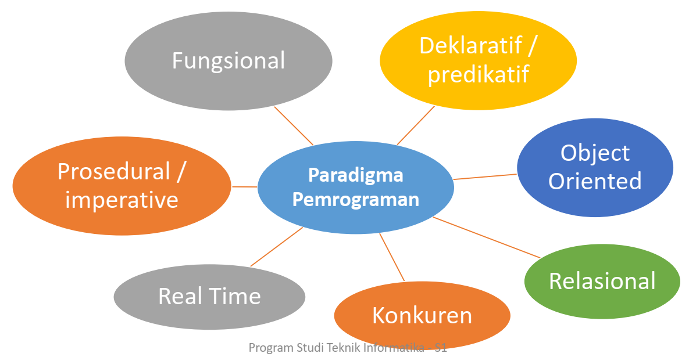

▸ Di pertemuan ketiga membahas tentang Pemrograman. Program penyimpanan Komputer. Urutan dari instruksi atau perintah tersimpan di dalam komputer terdiri atas perintah-perintah dasar yang sudah didefinisikan sebelumnya, 1. Aritmatika dan logika, 2. Tes sederhana, 3. Perpindahan data. Program spesial yang mengeksekusi instruksi sesuai urutan hingga selesai. Intepreter : menerjemahkan dan mengeksekusi setiap perintah dalam suatu aksi urutan (perintah demi perintah), Compiler : menghasilkan kode objek yang kemudian di-link oleh linker menjadi kode yang dapat dieksekusi. Cara Kerja Komputer, Manusia memberikan perintah pada komputer kemudian komputer beberapa kali menerjemahkan perintah. Terdapat beberapa tingkat Bahasa Pemrograman:
• Bahasa tingkat tinggi / High level language
Contoh: Java, Python, PHP
• Bahasa tingkat menengah / Mid level language
Contoh: C
• Bahasa tingkat rendah / Low level language
Contoh: Assembly
• Bahasa Mesin
Contoh: 01010101
Pemrograman tidak sekedar membuat kode-kode perintah belajar pemrograman BUKAN belajar bahasa pemrograman. Pemrograman = Science atau Art?
Kegiatan memprogram:
• Utak atik, mencari solusi permasalahan, menganalisis, membuat spesifikasi, menulis kode, mengeksekusi kode, membaca program, menganalisis kompleksitas.
Skala: rendah (1-2 file), sedang(100-200 file), besar(>200 file).
Kompleksitas = ke-kompleks-an dari suatu program berkaitan dengan pembuatan kode program yang efektif dan efisien
Paradigma Pemrograman adalah sudut pandang penyelesaian persoalan dengan program
 Bahasa Pemrograman
Bagaimana agar mesin paham dengan perintah kita? Menggunakan bahasa mesin, Contoh: 10101011101010101110101. Menggunakan bahasa pemrograman!, Contoh: print(“Halo”)
Macam-macam Bahasa Pemrograman ribuan bahasa pemrograman di dunia...
Fortran, Cobol, LISP, Prolog, Pascal, Basic, C, C++, C#, Java, Javascript, Perl, PHP, Visual C++, Python, R, B, dll
Aspek Bahasa (Konstruksi Primitif)
• Bahasa Indonesia: kata, angka
• Bahasa pemrograman: String, number, operator
Aspek Bahasa (Sintaks)
• Bahasa Indonesia:
“nasi ibu makan” → secara sintaksis tidak valid
“ibu makan nasi” → secara sintaksis valid
• Bahasa pemrograman:
“hi”5 → secara sintaksis tidak valid
2+5*100 → secara sintaksis valid
Aspek Bahasa (Semantik Statis) Suatu kalimat atau string yang valid secara sintaks dan mempunyai arti
• Bahasa Indonesia:
Ibu dimakan nasi → secara sintaksis valid, secara semantik statis tidak valid
• Bahasa Pemrograman:
3+5 → semantik statis valid
3+”hi” → semantik statis tidak valid
Semantik valid artinya makna yang terkait dengan rangkaian simbol/kata benar secara sintaksis tanpa kesalahan semantik statis
Pemrograman Prosedural
Istilah lain adalah pemrograman imperatif dihasilkan berdasarkan suatu dekomposisi (pemecahan masalah) aksional, menjadi aksi-aksi yang dijalankan secara berurutan.
Aksi-aksi:
• Jelas ada suatu keadaan awal (initial state) dan keadaan akhir (final state) dengan waktu yang terbatas
• Dapat dipecah dalam sub aksi
Aksi diterjemahkan sebagai instruksi-instruksi yang dapat dijalankan oleh mesin.
Aksi Sekuensial merupakan struktur control algoritma yang paling sederhana. Terdiri dari deretan instruksi/aksi/perintah dari aksi ke 1,2,3,…, sampai n. Aksi tersebut diawali dengan keadaan awal/Initial State yang harus dipenuhi dan keadaan akhir/final state.
• Initial State disingkat I.S
• Final State disingkat F.S
Notasi Algoritmik
Aksi sekuensial bisa dibuat dengan notasi algoritma. Bentuk penulisan algoritma / teks algoritma biasanya terdiri dari 3 bagian utama:
1. Judul : Spesifikasi deskripsi algoritma secara umum
2. Kamus : definisi konstanta, tipe data, variabel, spesifikasi prosedur / fungsi
3. Algoritma : isi penyelesaian masalah dengan menggunakan elemen – elemen pada kamus, intinya program yang berisi instruksi-instruksi atau pemanggilan aksi